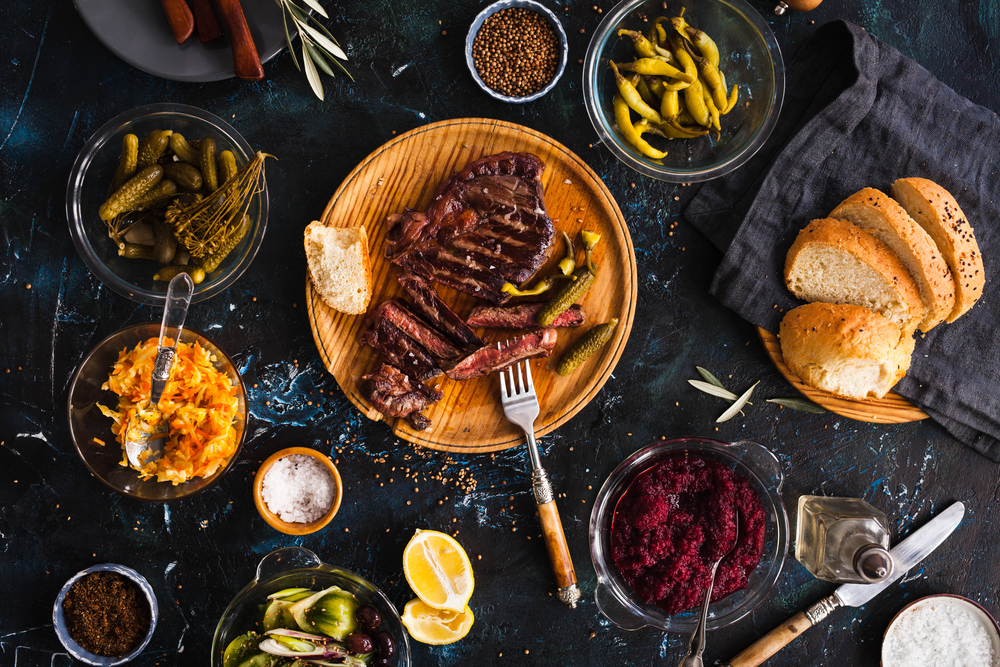
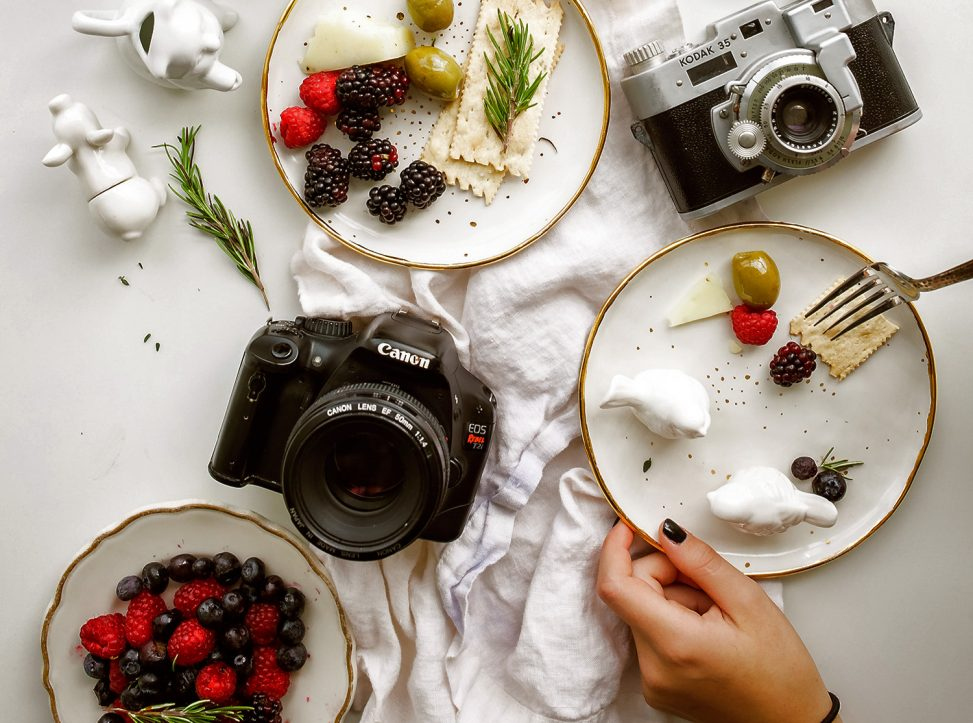
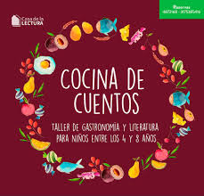
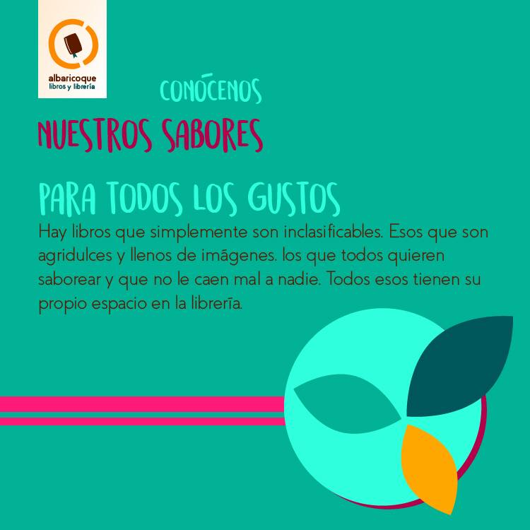
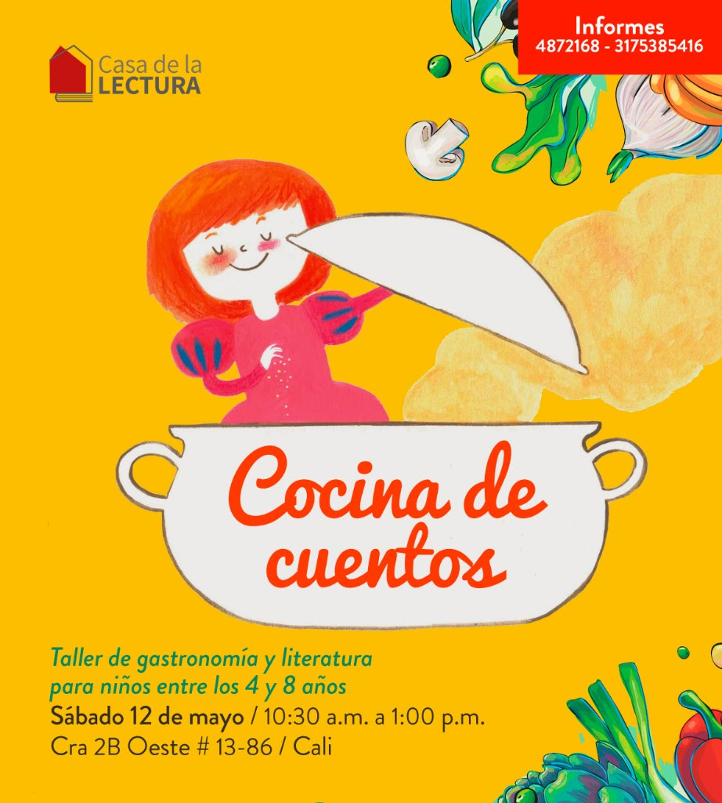

Twenty-six Lab
Comida +... Lo que sea!
Comida + Fotografía: "Al no contar con los sentidos del olfato y del tacto,los fotógrafos y estilistas gastronómicos deben centrarse en la vista para despertar en el espectador el deseo de probar la comida."
 
Para más información ir a: The Foodie Studies
Lectura, escritura + comida:"...pues en la cocina como en la escritura, los buenos resultados no se dan siempre con la mejor calidad, de primera vez; hay que probar y ensayar." (Alzate Yepes T. La cocina y la escritura: ¡Qué buen casao!. Perspect Nutr Humana. 2010;12:)
  Para ver una deliciosa receta literaria: Albaricoque Libros